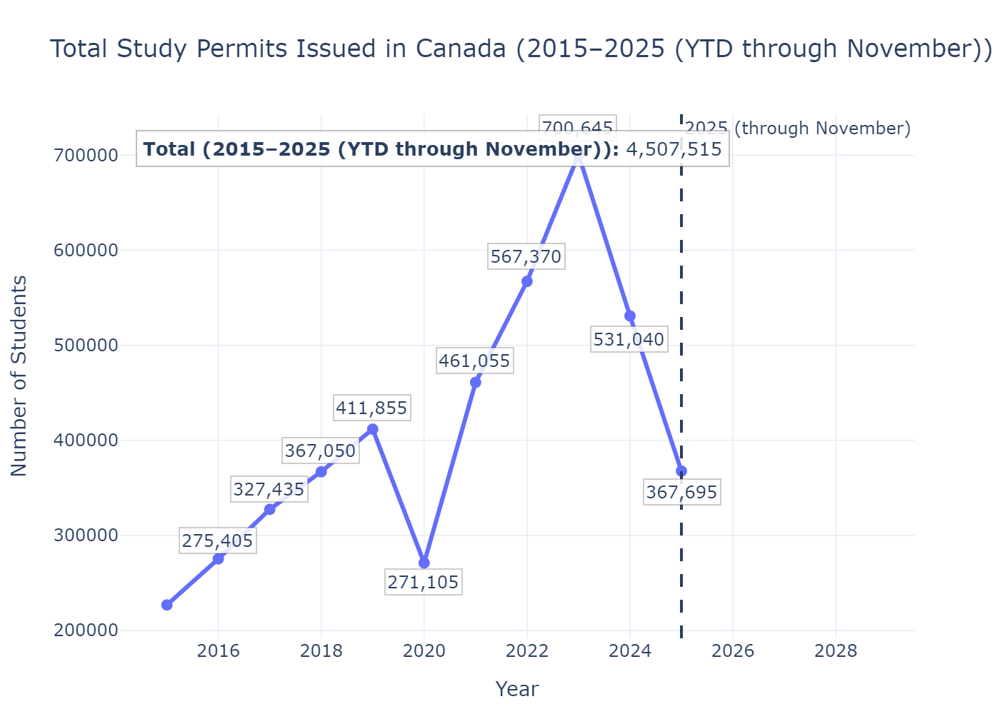
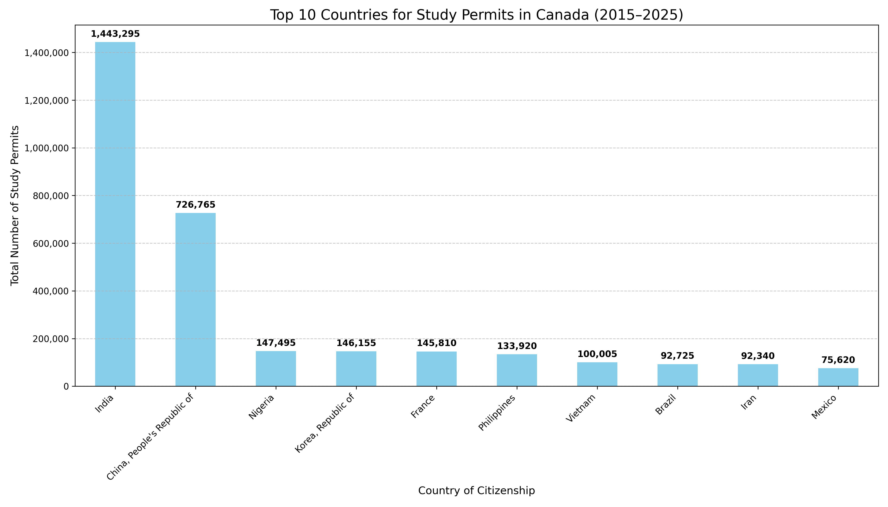
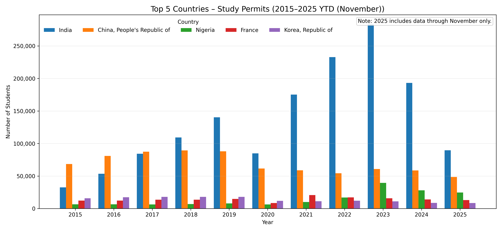
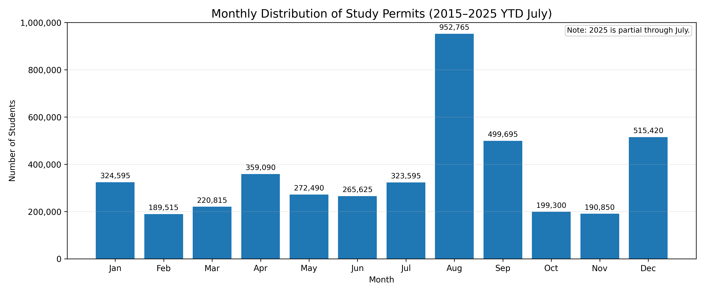
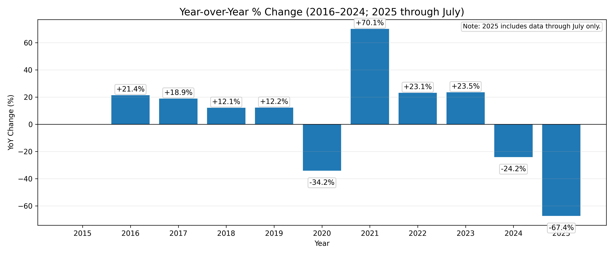

A 10-Year Data Journey (2015 – 2025)
Between 2015 and 2024, Canada saw a historic rise in international students. This chart shows the momentum we've had, peaking just before the recent policy shifts took hold.

Immigration isn't just numbers; it's about connections to the world. A few specific countries have become the backbone of the student community here.


Ever wonder why August feels so busy in university towns? The data proves it. Permit issuance follows a strict "heartbeat" every year.

This is the part everyone is talking about. By looking at the Year-over-Year (YoY) change, we can see if the new caps are actually working.
